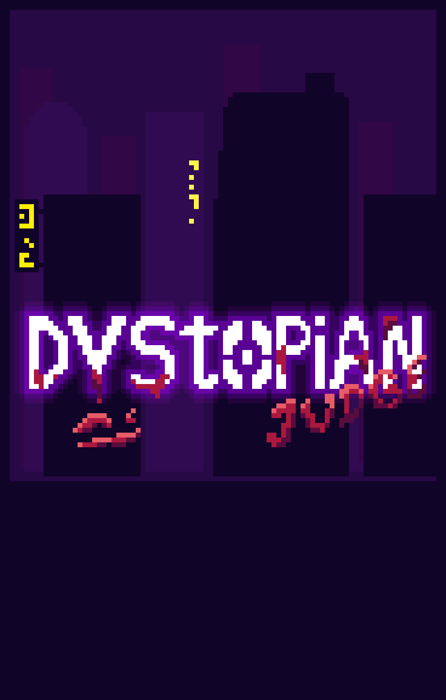
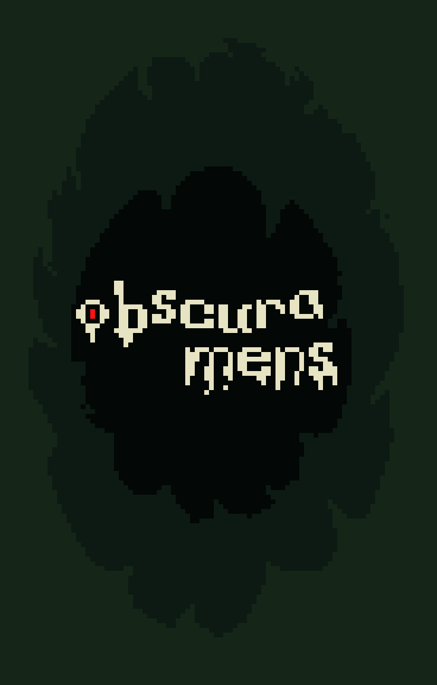

Nuestros Juegos
Factor-E
La "E" esta por "EXTRAORDINARIO" que es lo que vas a sentir con este increible título plataformero en 2D con hack and slash.
Más Información
Vegan Dragers
El clásico juego de snake pero con un giro de gamplay divertido e inusual.
Más Información
Just Jump!
Just Jump! es un divertido juego de movil que mezcla el plataformero 2d infinito con mecanicas de mejoras y sistemas de randomizer. Ahora disponible para pc!.
Más Información
Dystopian Judge
Un cruel simulador de juez con mecánicas de survival, ambientado en una futurista ciudad estilo cyberpunk en donde cada día un juez lucha por sobrevivir y por evitar que est mundo en el que vive no lo vuelva una mala persona.
Más Información
Proximos lanzamientos
